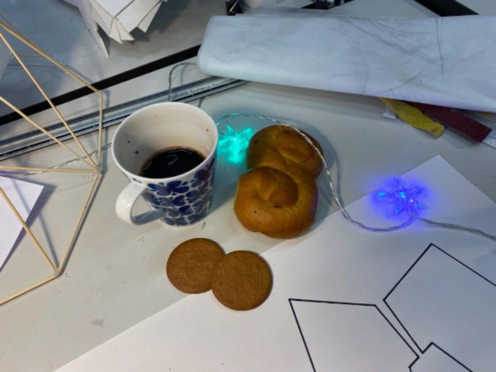

Igår var Bea på lussefrukost
(som ligger 400 från Rotgränd)

Ha en bra onsdag!
Gårdagens chokela' var
Ingen aning om hur många krokusar
som strök med denna gång, dock
Jag bad ChatGPT vara negativ till
chokladen och den skrev följande:
Chokladpralinen med saffran är en märklig och tvivelaktig skapelse. På den ena sidan innehåller den den onyttiga och ohälsosamma chokladen, som kan orsaka viktökning och andra hälsoproblem om man äter för mycket av den. På den andra sidan finns det den äckliga och obehagliga smaken av saffran, som kan vara svår att svälja för vissa. (1/2)
Trots dessa negativa egenskaper har chokladpralinen med saffran ändå en viss förtjusning för den som vågar smaka på den. Den söta och kryddiga smaken kan ge en behaglig och intensiv upplevelse, även om den inte är för alla. Chokladpralinen med saffran är alltså en väldigt kontroversiell och komplex smakupplevelse, som man bör tänka på innan man bestämmer sig för att äta den. (2/2)
Igår var Bea på lussefrukost
(som ligger 400 från Rotgränd)
Å sedan var det lussefika på skolan
Det har även varit julsittning
Rudolf undrar om de inte leker ute?
Jodå...